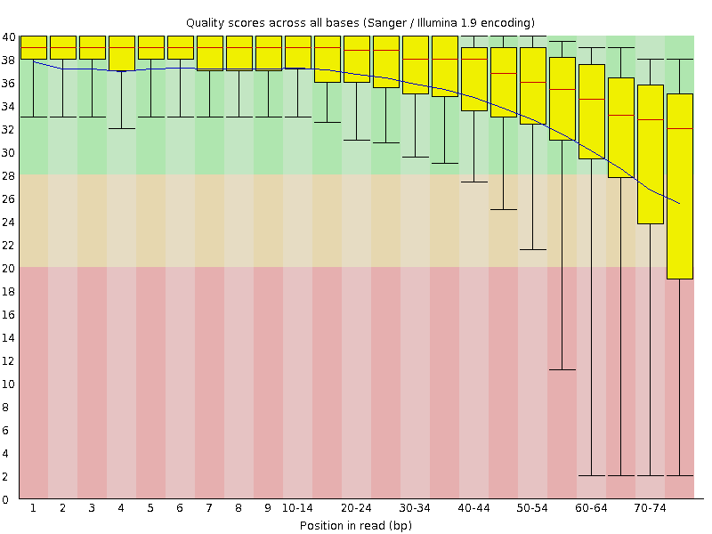
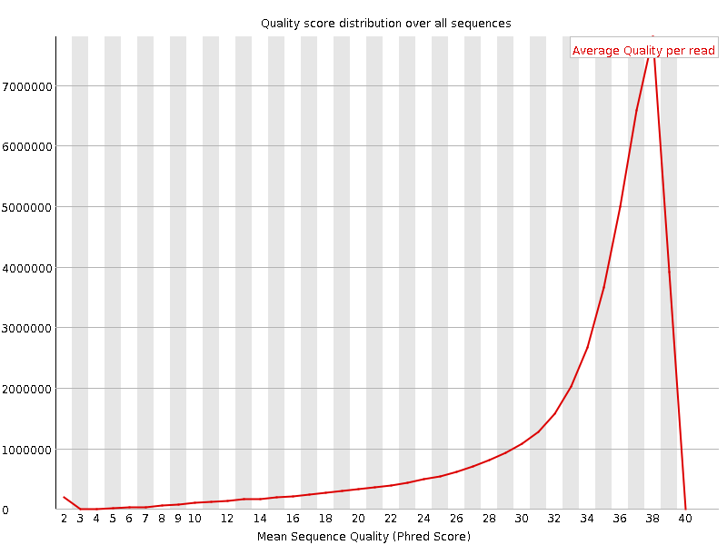
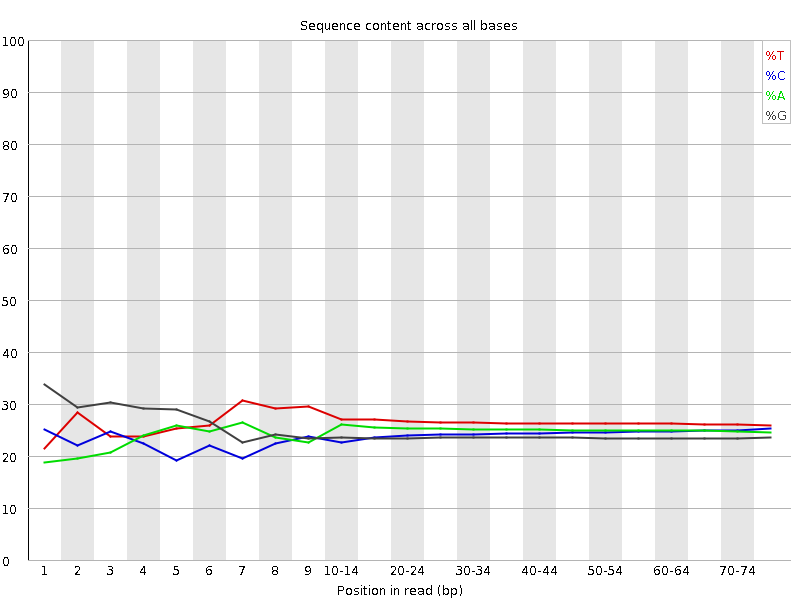
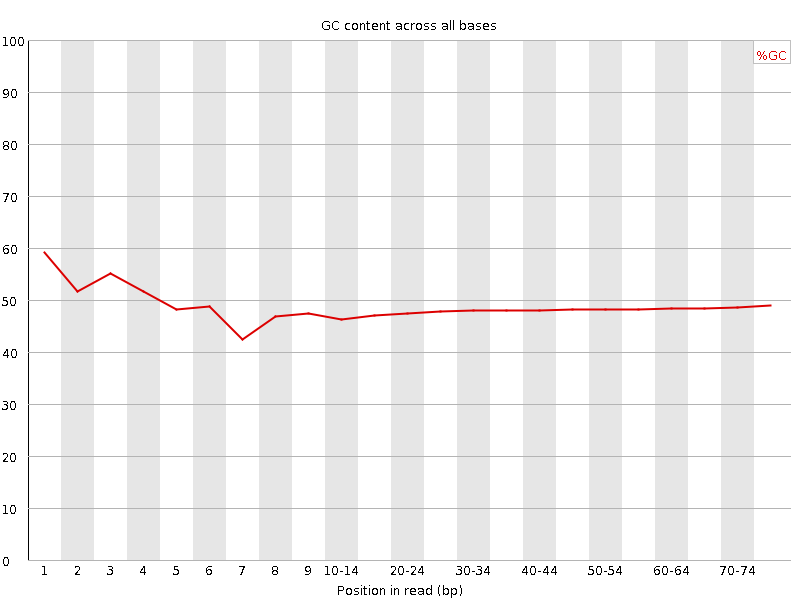
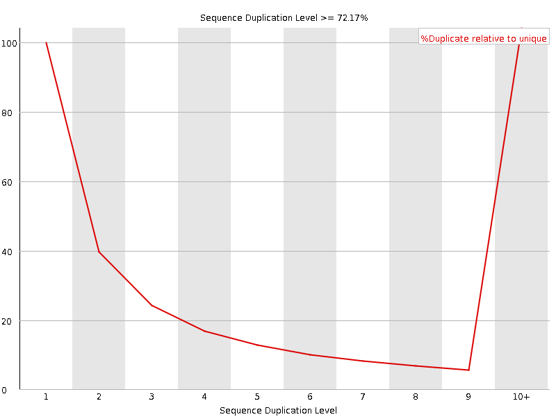
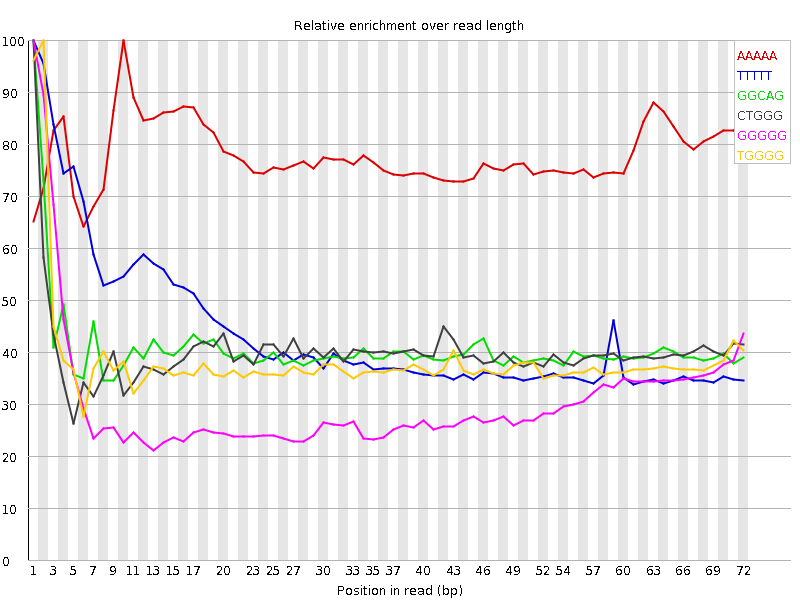

![[OK]](Icons/tick.png) Basic Statistics
Basic Statistics
| Measure | Value |
|---|---|
| Filename | SRR315313_1.fastq |
| File type | Conventional base calls |
| Encoding | Sanger / Illumina 1.9 |
| Total Sequences | 43753755 |
| Filtered Sequences | 0 |
| Sequence length | 76 |
| %GC | 48 |
Per base sequence quality

Per sequence quality scores

![[WARN]](Icons/warning.png) Per base sequence content
Per base sequence content

![[FAIL]](Icons/error.png) Per base GC content
Per base GC content

Per sequence GC content

Per base N content

Sequence Length Distribution

Sequence Duplication Levels

Overrepresented sequences
No overrepresented sequences
Kmer Content

| Sequence | Count | Obs/Exp Overall | Obs/Exp Max | Max Obs/Exp Position |
|---|---|---|---|---|
| AAAAA | 9525185 | 3.07634 | 3.9397023 | 10 |
| TTTTT | 10767380 | 2.5649884 | 5.8549614 | 1 |
| GGCAG | 6200870 | 2.313949 | 5.672813 | 1 |
| CTGGG | 6425075 | 2.2560165 | 5.6157765 | 1 |
| GGGGG | 5275835 | 2.0553043 | 6.6954217 | 1 |
| TGGGG | 5451020 | 1.9246013 | 5.0008802 | 2 |
| GGGAG | 4770295 | 1.7899685 | 5.0067415 | 1 |
| GGGGA | 4456770 | 1.6723236 | 6.311485 | 1 |
| GTGGG | 4210700 | 1.4866793 | 6.244202 | 1 |
| GGGGT | 4048215 | 1.4293104 | 5.329982 | 1 |
| TGTGT | 4177945 | 1.2116631 | 6.253959 | 2 |
| GTGTG | 3729025 | 1.1932635 | 7.188343 | 1 |
| TACAA | 3413875 | 1.0711671 | 6.2049336 | 6 |
| CGGGG | 2580400 | 0.99970764 | 5.955123 | 1 |
| GTACA | 2987405 | 0.97316957 | 6.3960624 | 5 |
| TGTAC | 2821180 | 0.86474514 | 5.919681 | 4 |
| GTGTA | 2564055 | 0.7902849 | 6.227251 | 3 |